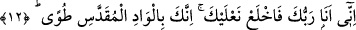

12. Şüphesiz ben senin Rabbinim, ayakkabılarını çıkar. Sen mukaddes Tuvâ
vâdisindesin.
“Şüphesiz” yâni şüphe etme ve kesin olarak bil ki “ben senin Rabbinim,
ayakkabılarını çıkar.” Çıplak ayakla dolaşmak tevâzu ve edebe daha uygun olduğu için
Allah Mûsâ (a.s.)’a ayakkabılarını çıkarmasını emretmiştir. Bu yüzden Bişr Hâfî ve
benzeri sûfîler çıplak ayakla dolaşırlar, selef-i salihin de Kâbe’yi yalınayak tavaf
ederlerdi.
Bir hazine ki yer gök onun tâlibi
Ayağı çıplaklardadır, görmek istersen o hazineyi
Ya da Mûsâ (a.s.)’ın ayakları vâdîyi şereflendirsin ve toprağın bereketi ona ulaşsın
diye bu emir verilmiştir. Habîb (s.a.)’e (Hz. Peygamber’e) ise “Ayakkabılarınla arşın
yaygıları üzerine yürü ki arş ayakkabılarının tozu ile şereflensin ve arşın nûru sana
ulaşsın, ey dünya ve âhiretin Efendisi!” denilmiştir.
Ya da meliklerin huzuruna ayakkabı ile girilmesi uygun olmadığından dolayı Mûsâ
(a.s.)’a ayakkabılarını çıkarması emredilmiştir. Ancak bu, yukarıda geçtiği gibi
Muhammed (a.s.)’ın makamına göre değil, Mûsâ (a.s.)’ın mertebesine göredir.
Ebû Hanîfe’nin fazîletleri arasında şöyle bir şey anlatılmıştır: Her ne zaman Ebû
Hanife halifeyi ziyarete gitse halife ondan katırından inmemesini, katırının ayaklarını
örtülere bastırarak huzuruna gelmesini istemiştir.
Ya da Mûsâ (a.s.)’ın ayakkabıları tabaklanmamış eşek derisindendi. Bu sebeple onları
çıkarması emredildi. Bu yüzden bu emir terbiye verme (te’dib) kabilindendir.
Kâşifî der ki: “En doğru görüşe göre onun ayakkabıları tabaklanmış sığır derisindendi
ve temizdi.”
Ya da rüyada ayakkabı görmek hanıma yorulur. Allah Teâlâ hanımına ve çocuğuna
iltifat etmemesini, hatırına getirmemesini murâd etmiştir.
el-Esrâru’l-Muhammediyye’de der ki: “Ayakkabılarını çıkar” kavlinin garib
tefsirlerinden birisi de bu ifâdenin ‘hanımını ve koyunlarını düşünmeyi bırak’ demek
olmasıdır. Hz. Şeyh Üftâde ise bu ifâdenin ‘Tabîat ve nefsi çıkar, terk et!’ anlamına
geldiğini söylemiştir.
Fakir (Bursevî) der ki: “Şüphesiz kadın tabîatın, çocuk da nefsin sûretidir. Çünkü
çocuk sevgisi çoğunlukla nefsin hevasından (arzusundan) gelir. Aynı şekilde kadın da
erkeğin kendisi hükmündedir. Çünkü asıl olarak ondan bir cüzdür. Koyun ve diğer
hayvanlarda maîşet olarak kişinin varlığına tâbi şeylerdendir. Âyette sanki şöyle
denilmektedir: “Nefsini ve ona tâbi olan şeyleri ne olursa olsun aklından çıkar, bırak ve
öyle gel.”